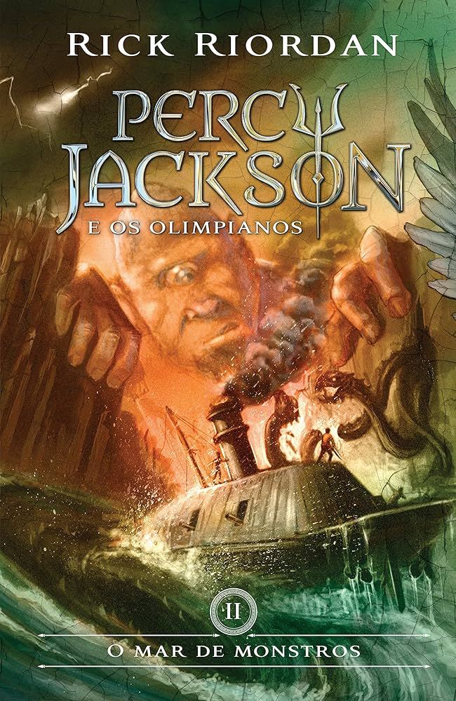
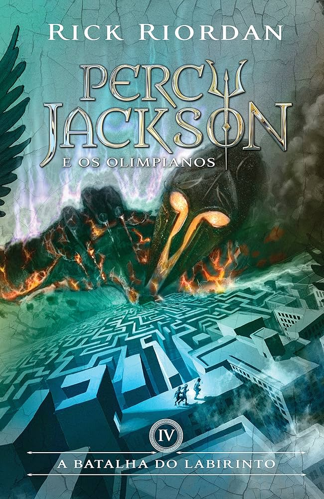
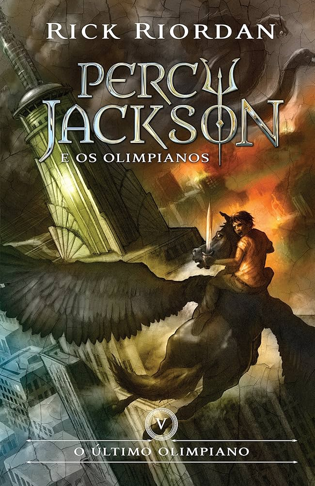
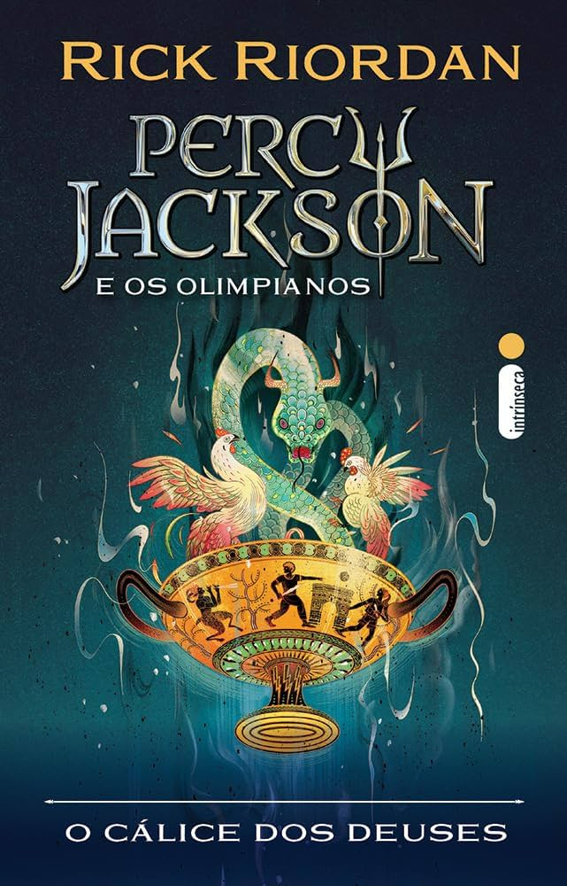
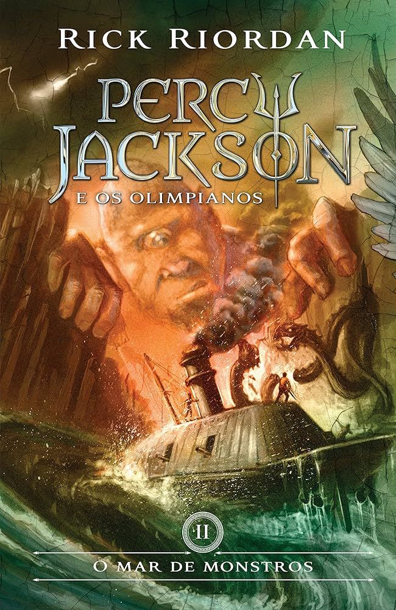
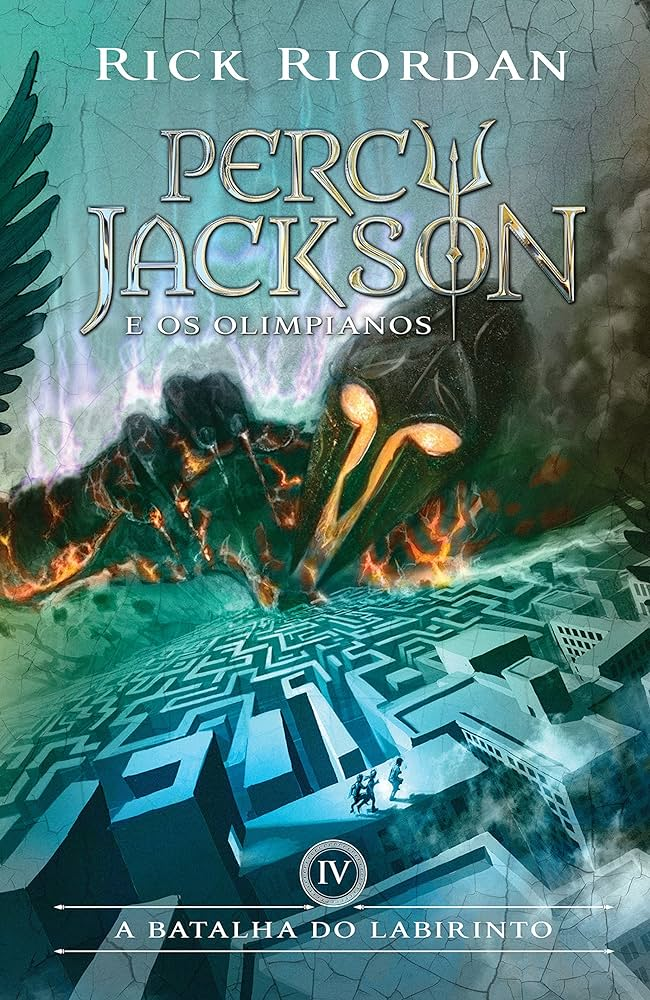
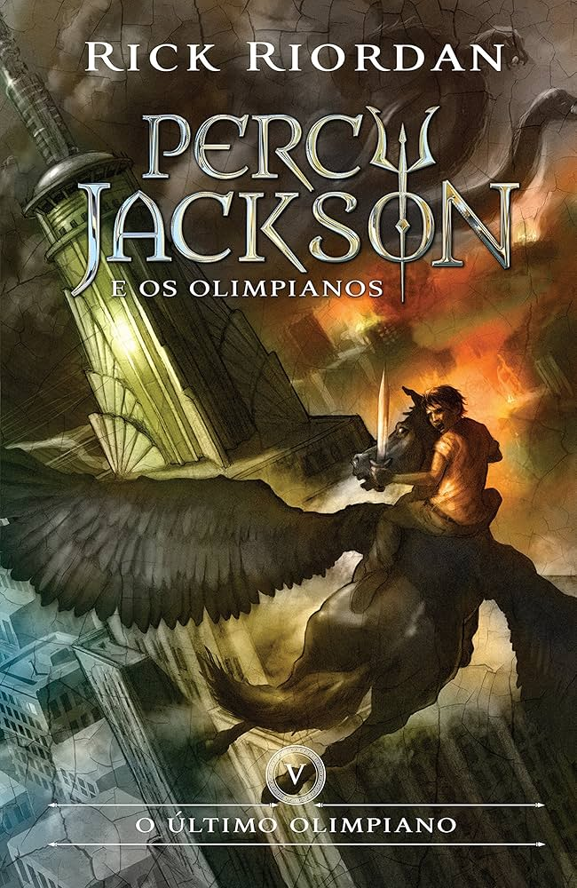
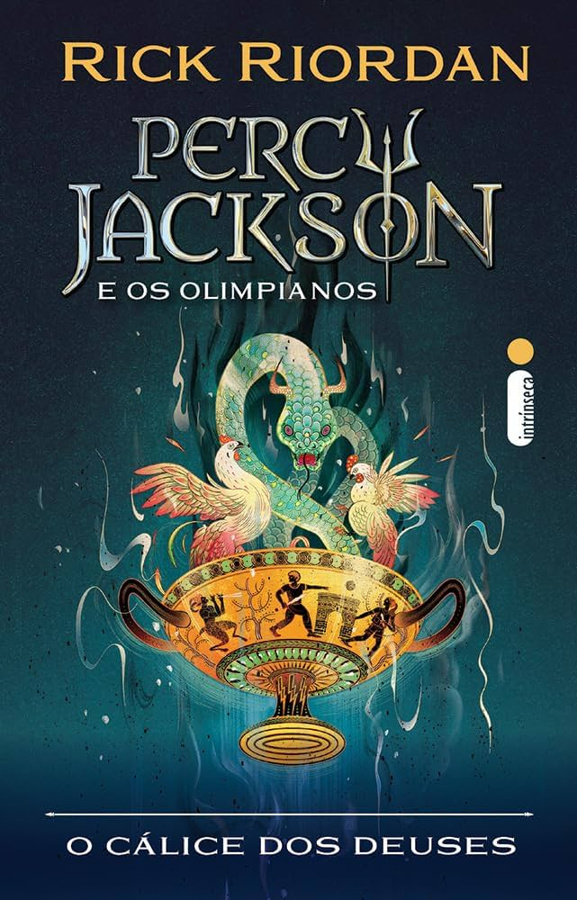

Percy Jackson é um adolescente de 12 anos que sempre sentiu que não se encaixava. Com dislexia e TDAH, ele vive em constante dificuldade na escola e tem uma série de eventos estranhos em sua vida que nunca consegue explicar. Mas tudo muda quando, durante uma excursão ao Museu Metropolitano de Arte, ele descobre que criaturas da mitologia grega são reais e que ele é o alvo de uma delas.
Grover Underwood ,é seu melhor amigo no colégio e após esse evento é revelado sua verdadeira identidade, um sátiro que foi designado para protegê-lo. Grover consegue levar Percy com vida até o acampamento meio-sangue onde ele conhece quem são os seus inimigos e aprender a se preparar para lutar contra eles.
É no acampamento que ele conhece Annabeth Chase, filha da deusa Atena. Annabeth é extremamente líder e preparada para o combate e ajuda Percy em sua integração com esse mundo dos deuses gregos.
Em uma partida do jogo Capture a bandeira, Percy é revelado como filho de um dos deuses grandes, Poseidon, o que é um perigo para ele, pois ser filho de um dos 3 grandes era uma quebra de regra, já que ficou acordado que nenhum dos grandes poderiam ter mais filhos, pois eram muito mais fortes que o resto dos semi-deuses.
Entre batalhas épicas com deuses e monstros, o trio Annabeth, Percy e Grover vive momentos de humor e reflexões sobre amizade, família e heroísmo. Percy se depara com escolhas difíceis que definirão não só o seu destino, mas também o equilíbrio entre os mundos humano e divino. A história combina ação, mitologia e emoção, tornando-se uma jornada inesquecível.
 






